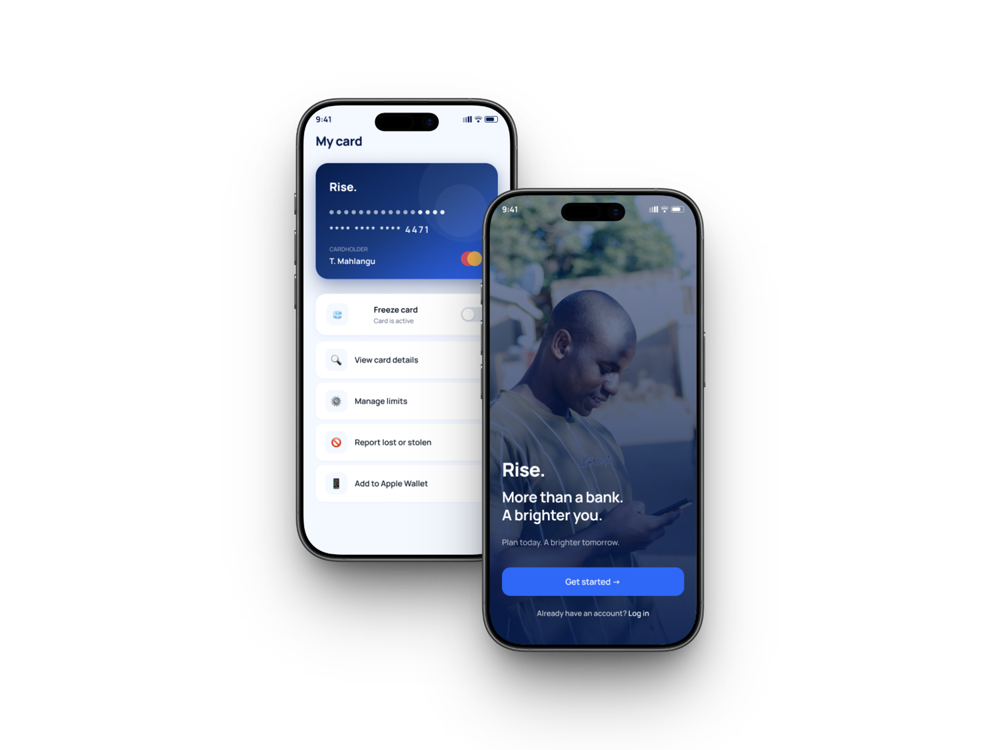
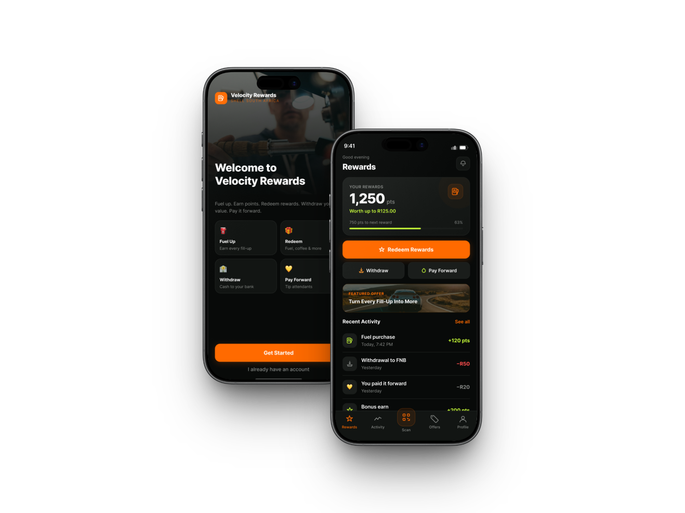

Stanslous Nhau
UX Designer & Design Strategist
I combine UX research, systems thinking and statistical reasoning to turn complex problems into clear, evidence-led product decisions.

Selected work. Evidence → decisions → outcomes.
Enterprise API Ecosystem Research
Researching why API discovery, reuse and collaboration were breaking down across a complex banking ecosystem.
Explore case study →RISE: Real Income, Steady Earnings
Helping young South Africans protect financial breathing room after their first paycheck.
Explore case study →
Velocity Rewards MVP
Making fuel rewards visible, flexible and useful at the moment customers need them.
Explore case study →

Statistics trained me to question the evidence. UX taught me to understand the person behind it.
I hold a BCom in Statistics from Nelson Mandela University. I now combine research, quantitative reasoning and systems thinking to make product decisions that are easier to defend.
Research
Behaviour, interviews and synthesis.
Strategy
Turning evidence into product direction.
Design
Flows, prototypes and rationale.
Have an interesting problem or opportunity?
I’m open to UX design, product design, UX research and design strategy opportunities.